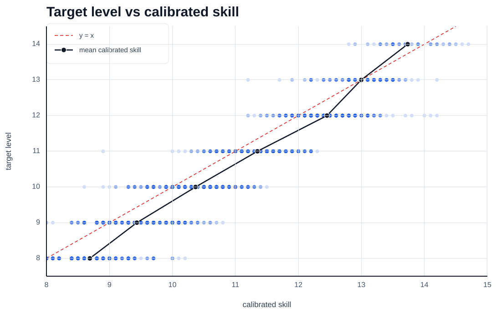

このサイトはbeatmania IIDX公式とは無関係のファンサイトです。
このサイトを利用したことによって生じるあらゆる損害について、当サイトの運営は責任を負いかねます。自己責任でご利用ください。
このサイトの非公式難易度は、譜面情報に基づいた独自の機械学習手法によって予測されています。
☆8-☆11については公式難易度を教師データに、☆12については公式難易度および一部CPI(https://cpi.makecir.com/)のCLEAR適正CPIを教師データにしています。
特に☆12について、上位4割程度が☆13、上位1割程度が☆14となるように学習しています。つまり、Pred. 14.0の譜面は☆12上位1割程度のノマゲ難易度であると予測しています。

公式難易度に対する予測の正解率は2026/6/22バージョンで約79.0%です。☆±1範囲では約99.8%です。
予測の仕組み上、一部の個人差要素（皿、CN、ソフランなど）や、ランダムオプションの有無で難易度が大きく変わる譜面などについては、予測精度が比較的低下する可能性があります。
学習のために一部TexTage(https://textage.cc)様の情報を参考にさせていただいています。
今後、個人クリアランプ管理や、公式CSV読み込みなどに対応する可能性もありますが、現時点では未定です。
お問い合わせはX:@rice_Placeまでお願いします。